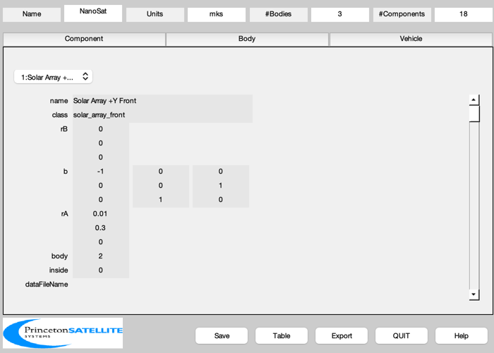
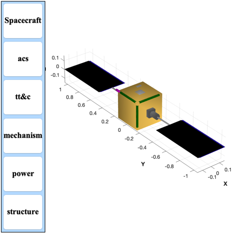

Make a detailed demonstration nano-spacecraft with two solar arrays.
The spacecraft has three bodies, a core and two rotating solar arrays. The satellites is just 30 cm on a side. Actuators including array drives, RWAs, and magnetic torquers. The model is stored in the file NanoSat.mat ------------------------------------------------------------------------- See also BuildCADModel, CreateBody, CreateComponent, SaveStructure, ShowCAD -------------------------------------------------------------------------
Contents
%------------------------------------------------------------------------------- % Copyright (c) 2020 Princeton Satellite Systems, Inc. % All rights reserved. % Since 2020.1 %-------------------------------------------------------------------------------
Model Data
%------------ % Orbit %------ r = 7000; v = sqrt(3.98600436e5/r); rECI = [r;0;0]; vECI = [0;v;0]; qLVLH = QLVLH( rECI, vECI ); q = [1;0;0;0]; omega = [0;-v/r;0]; cMToM = 0.01; % Core box %--------- coreX = 0.3; coreY = 0.3; coreZ = 0.3; corePosition = [0; 0; 0]; % Solar arrays %------------- strutLength = coreX; arrayLength = 2*coreX; arrayWidth = coreX; arrayY = coreY/2 + arrayLength/2 + strutLength; bX = [1 0 0;0 0 -1;0 1 0]'; bY = [-1 0 0;0 1 0;0 0 -1]; % Torque rods %------------ torqueRodLength = 0.8*coreZ; torqueRodWidth = 0.05*coreZ; torqueRodDipole = 10; xTorquerLoc = [0;-(coreY-torqueRodWidth)/2;(coreZ - torqueRodWidth)/2]; yTorquerLoc = [-(coreX-torqueRodWidth)/2;0;(coreZ - torqueRodWidth)/2]; zTorquerLoc = [-(coreX-torqueRodWidth)/2;-(coreY-torqueRodWidth)/2;0]; % Reaction wheels %---------------- lRWA = 0.114; % From RWA Model dRWA = 0.0485; rWAXLoc = [coreX/2-lRWA;coreY/3;coreZ/3]; rWAYLoc = [coreX/4;coreY/2-lRWA;coreZ/4]; rWAZLoc = [coreY/4;coreX/4;coreZ/2 - lRWA]; % Command and data handling box %------------------------------ xCDH = 0.2; yCDH = 0.1; zCDH = 0.2; cDHLoc = [-(coreX - xCDH)/4;(coreY-1.1*yCDH)/2;(coreZ-1.1*zCDH)/2]; % Earth sensor %------------- eSABoresight = [0;0;1]; eSALoc = [0;coreY/4;coreZ/2]; % Sun sensor %---------- sSABoresight = [1;0;0]; sSALoc = [coreX/2;0;0]; % Magnetometer %------------- magnetometerY = coreY*(7/40); magnetometerXZ = coreZ*(2/40);
Initialize BuildCADModel
%-------------------------- BuildCADModel( 'initialize' ); % Add spacecraft properties %-------------------------- BuildCADModel( 'set name' , 'NanoSat' ); BuildCADModel( 'set units', 'mks' ); BuildCADModel( 'set rECI' , rECI ); BuildCADModel( 'set vECI' , vECI ); BuildCADModel( 'set qLVLH', qLVLH ); BuildCADModel( 'set qECIToBody', q ); BuildCADModel( 'set omega', omega );
Create bodies first
%---------------------- % Core %----- m = CreateBody( 'make', 'name', 'Core' ); BuildCADModel('add body', m ); m = CreateBody( 'make', 'name', 'Solar Array 1', 'bHinge', struct( 'b', eye(3),... 'axis', 2 ), 'previousBody', 1, 'rHinge', [0;coreY/2;0] ); BuildCADModel('add body', m ); m = CreateBody( 'make', 'name', 'Solar Array 2', 'bHinge', struct( 'b', eye(3),... 'axis', 2 ), 'previousBody', 1, 'rHinge', [0;-coreY/2;0] ); BuildCADModel('add body', m ); % This creates the connections between the bodies %------------------------------------------------ BuildCADModel( 'compute paths' );
Add Components
%----------------- % Solar Array 1 %----------------------------------------------------------------------------------------------- m = CreateComponent( 'make', 'solar array front', 'z', arrayLength, 'x', arrayWidth, 'nZ', 1, 'nX', 1, 'dirZ', 1,... 'theta', 0, 'electricalConversionEfficiency', 0.18, 'b', bY*bX,... 'rA', [0.01;strutLength;0], 'mass', 10, 'cM', [0;0;0],... 'name', 'Solar Array +Y Front', 'body', 2, 'faceColor', 'solar cell',... 'inside',0); BuildCADModel( 'add component', m ); m = CreateComponent( 'make', 'solar array back', 'z', arrayLength, 'x', arrayWidth, 'nZ', 1, 'nX', 1, 'dirZ', 1,... 'theta', 0, 'b', bY*bX,... 'rA', [-0.01;strutLength;0], 'mass', 10, 'cM', [0;0;0],... 'name', 'Solar Array +Y Back', 'body', 2, 'faceColor', 'black',... 'inside',0 ); BuildCADModel( 'add component', m ); m = CreateComponent( 'make', 'box', 'x', 0.01 , 'y', strutLength, 'z', 0.01,... 'b', eye(3), 'rA', [0; strutLength/2; 0], 'mass', 1, 'cM', [0;0;0],... 'name', 'Support', 'body', 2, 'faceColor', 'aluminum',... 'inside',0 ); BuildCADModel( 'add component', m ); % Solar Array 2 %----------------------------------------------------------------------------------------------- m = CreateComponent( 'make', 'solar array front', 'z', arrayLength, 'x', arrayWidth, 'nZ', 1, 'nX', 1, 'dirZ', 1,... 'theta', 0, 'electricalConversionEfficiency', 0.18, 'b', bX',... 'rA', [0.01;-strutLength;0], 'mass', 10, 'cM', [0;0;0],... 'name', 'Solar Array -Y Front', 'body', 3, 'faceColor', 'solar cell',... 'inside',0 ); BuildCADModel( 'add component', m ); m = CreateComponent( 'make', 'solar array back', 'z', arrayLength, 'x', arrayWidth, 'nZ', 1, 'nX', 1, 'dirZ', 1,... 'theta', 0, 'b', bX',... 'rA', [-0.01;-strutLength;0], 'mass', 10, 'cM', [0;0;0],... 'name', 'Solar Array -Y Back', 'body', 3, 'faceColor', 'black',... 'inside',0 ); BuildCADModel( 'add component', m ); m = CreateComponent( 'make', 'box', 'x', 0.01 , 'y', strutLength, 'z', 0.01,... 'b', eye(3), 'rA', [0; -strutLength/2; 0], 'mass', 1, 'cM', [0;0;0],... 'name', 'Support', 'body', 3, 'faceColor', 'aluminum',... 'inside',0 ); BuildCADModel( 'add component', m ); % Core %----------------------------------------------------------------------------------------------- m = CreateComponent( 'make', 'box', 'x', coreX, 'y', coreY, 'z', coreZ, 'faceColor', 'gold foil',... 'rA', corePosition, 'mass', 10, 'name', 'Panels', 'body', 1,... 'inside',0 ); BuildCADModel( 'add component', m ); %%%%%%%%%%%%% %%% Actuators %%%%%%%%%%%%% % Array drives %------------- m = CreateComponent( 'make', 'single axis drive', 'mass',4, ... 'rA', [0; coreY/2; 0], 'name', 'Drive +Y', 'body', 1, 'faceColor', [0.6 0.6 0.6],... 'unitVector',[0; 1; 0],'drivenBody',2,'inside',0); BuildCADModel( 'add component', m ); m = CreateComponent( 'make', 'single axis drive', 'mass',4,... 'rA', [0; -coreY/2; 0], 'name', 'Drive -Y', 'body', 1, 'faceColor', [0.6 0.6 0.6],... 'unitVector',[0; -1; 0],'drivenBody',3,'inside',0); BuildCADModel( 'add component', m ); % RWA X %-------------- m = CreateComponent( 'make', 'reaction wheel', 'model', 'hr04', 'unitVector', [1;0;0],... 'rA', rWAXLoc, 'mass', 1.5, 'name', 'RWA X', 'body', 1, 'inside', 1, 'faceColor', 'aluminum' ); BuildCADModel( 'add component', m ); % RWA Y %-------------- m = CreateComponent( 'make', 'reaction wheel', 'model', 'hr04', 'unitVector', [0;1;0],... 'rA', rWAYLoc, 'mass', 1.5, 'name', 'RWA Y', 'body', 1, 'inside', 1, 'faceColor', 'aluminum' ); BuildCADModel( 'add component', m ); % RWA Z %-------------- m = CreateComponent( 'make', 'reaction wheel', 'model', 'hr04', 'unitVector', [0;0;1],... 'rA', rWAZLoc, 'mass', 1.5, 'name', 'RWA Z', 'body', 1, 'inside', 1, 'faceColor', 'aluminum' ); BuildCADModel( 'add component', m ); % X Torquer %-------------- m = CreateComponent( 'make', 'magnetic torquer', 'x', torqueRodLength, 'y', torqueRodWidth, 'z', torqueRodWidth, 'faceColor', [0 0.5 0],... 'residualDipoleFraction', 0.00, 'dipole', [torqueRodDipole;0;0],... 'rA', xTorquerLoc, 'mass', 1, 'name', 'Torque Rod X', 'body', 1, 'inside', 1 ); BuildCADModel( 'add component', m ); % Y Torquer %-------------- m = CreateComponent( 'make', 'magnetic torquer', 'x', torqueRodWidth, 'y', torqueRodLength, 'z', torqueRodWidth, 'faceColor', [0 0.5 0],... 'residualDipoleFraction', 0.00, 'dipole', [0;torqueRodDipole;00],... 'rA', yTorquerLoc, 'mass', 1, 'name', 'Torque Rod Y', 'body', 1, 'inside', 1 ); BuildCADModel( 'add component', m ); % Z Torquer %-------------- m = CreateComponent( 'make', 'magnetic torquer', 'x', torqueRodWidth, 'y', torqueRodWidth, 'z', torqueRodLength, 'faceColor', [0 0.5 0],... 'residualDipoleFraction', 0.00, 'dipole', [0;0;torqueRodDipole],... 'rA', zTorquerLoc, 'mass', 1, 'name', 'Torque Rod Z', 'body', 1, 'inside', 1 ); BuildCADModel( 'add component', m ); % Chassis %-------- m = CreateComponent( 'make', 'box', 'x', xCDH, 'y', yCDH, 'z', zCDH, 'faceColor', [0 0.5 0.5],... 'rA', cDHLoc, 'mass', 1, 'name', 'C&DH Box', 'body', 1, 'inside', 1 ); BuildCADModel( 'add component', m ); % Battery %-------------- batteryZ = coreX/4; m = CreateComponent( 'make', 'battery', 'x', batteryZ, 'y', batteryZ, 'z', batteryZ, 'faceColor', 'aluminum',... 'rA', [0; 0; (coreZ-batteryZ)/2], 'mass', 20, 'name', 'Battery', 'body', 1,... 'batteryCapacity',6e5); BuildCADModel( 'add component', m ); %%%%%%%%%%% %%% Sensors %%%%%%%%%%% % Magnetometer %-------------- m = CreateComponent( 'make', 'magnetometer', 'x', magnetometerXZ, 'y',... magnetometerY, 'z', magnetometerXZ, 'rA', [-coreX/2;coreY/2;coreZ/2],... 'name', 'Magnetometer', 'body', 1, 'faceColor', [1 0 1],... 'inside',0 ); BuildCADModel( 'add component', m );
Add subsystems
%--------------- BuildCADModel( 'add subsystem', 'acs', {'magnetometer','torque','rwa'} ); BuildCADModel( 'add subsystem', 'tt&c', {'C&DH'} ); BuildCADModel( 'add subsystem', 'mechanism', {'drive'} ); BuildCADModel( 'add subsystem', 'power', {'solar array','battery'} ); BuildCADModel( 'add subsystem', 'structure', {'support', 'panel'} );
All components have been created, get the finished model
%--------------------------------------------------------- g = BuildCADModel( 'get cad model' ); if 0 dName = FindDirectory('SCModels'); SaveStructure( g, 'NanoSat' ) end ShowCAD(g); %-------------------------------------- % $Id: 2d5ef080e083549b5bcef6743641d4519275e3f0 $